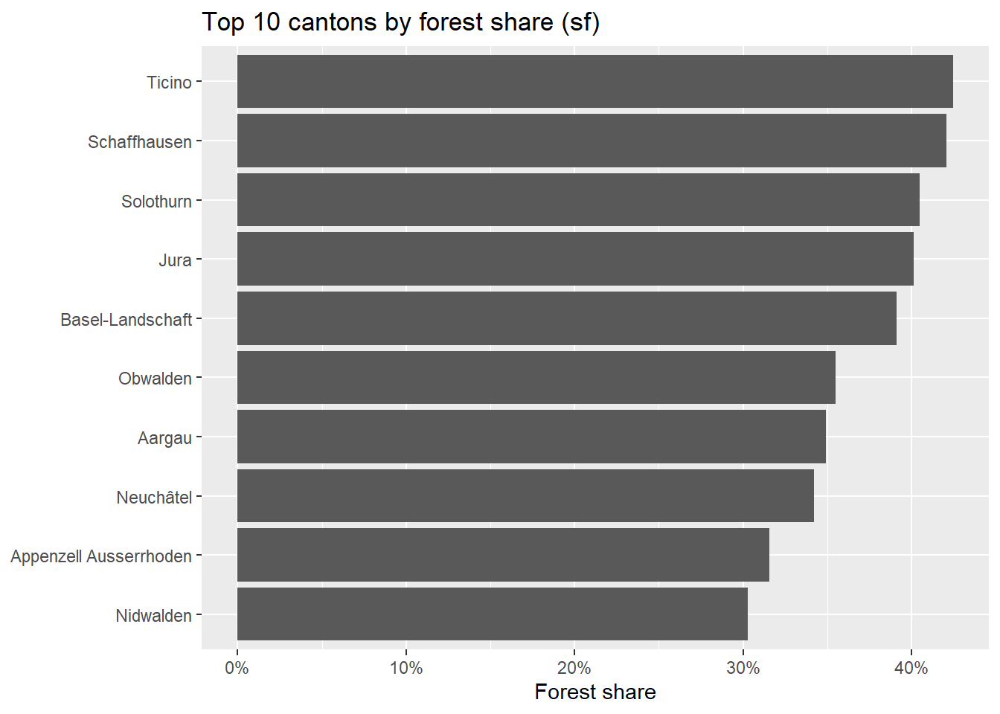

library(sf)
library(dplyr)
library(ggplot2)
library(scales)
library(tictoc)
sf_use_s2(FALSE)
tlm_path <- "data/SWISSTLM3D_2026_LV95_LN02.gpkg"
bnd_path <- "data/swissBOUNDARIES3D_1_5_LV95_LN02.gpkg"
# Cantons
kantone_raw <- st_read(bnd_path, layer = "tlm_kantonsgebiet", quiet = TRUE)
name_candidates <- c("NAME", "NAME_DE", "KANTONSNAME", "KANTON", "name", "kanton")
name_col <- name_candidates[name_candidates %in% names(kantone_raw)][1]
if (is.na(name_col)) stop("No canton name column detected.")
kantone <- kantone_raw |>
transmute(name = .data[[name_col]]) |>
st_zm(drop = TRUE, what = "ZM") |>
st_make_valid()
if (st_crs(kantone)$epsg != 2056) kantone <- st_transform(kantone, 2056)
kantone$canton_area <- as.numeric(st_area(kantone))
c(n_kantone = nrow(kantone))n_kantone
26 # Forest polygons (objektart == "Wald")
bb <- st_read(tlm_path, layer = "tlm_bb_bodenbedeckung", quiet = TRUE)
bb <- st_zm(bb, drop = TRUE, what = "ZM")
if (st_crs(bb)$epsg != 2056) bb <- st_transform(bb, 2056)
wald <- bb |>
filter(objektart == "Wald") |>
select()
rm(bb)
c(n_wald = nrow(wald))n_wald
104145 # Forest share per canton
tic("sf forest share")
forest_area_by_canton <- lapply(seq_len(nrow(kantone)), function(i) {
k <- kantone[i, ]
idx <- st_intersects(k, wald, sparse = TRUE)[[1]]
if (length(idx) == 0) {
return(data.frame(name = k$name, canton_area = k$canton_area, wald_area = 0))
}
w_sub <- wald[idx, , drop = FALSE]
w_sub <- st_make_valid(w_sub)
inter <- suppressWarnings(st_intersection(w_sub, k))
inter <- st_collection_extract(inter, "POLYGON")
w_area <- sum(as.numeric(st_area(inter)), na.rm = TRUE)
data.frame(name = k$name, canton_area = k$canton_area, wald_area = w_area)
})
toc()sf forest share: 246.27 sec elapsedwald_share_sf <- bind_rows(forest_area_by_canton) |>
mutate(wald_share = wald_area / canton_area) |>
arrange(desc(wald_share))
head(wald_share_sf, 10) name canton_area wald_area wald_share
1 Ticino 2812154294 1194097417 0.4246202
2 Schaffhausen 298418432 125487023 0.4205069
3 Solothurn 790456244 319928452 0.4047390
4 Jura 858125365 344212164 0.4011211
5 Basel-Landschaft 517668761 202593006 0.3913564
6 Obwalden 490583307 174205476 0.3550987
7 Aargau 1403798008 489933659 0.3490058
8 Neuchâtel 802164263 274293449 0.3419417
9 Appenzell Ausserrhoden 242836490 76629643 0.3155607
10 Nidwalden 275845122 83502546 0.3027153summary(wald_share_sf$wald_share) Min. 1st Qu. Median Mean 3rd Qu. Max.
0.1159 0.2444 0.2858 0.2865 0.3472 0.4246 # Map
kantone_map <- kantone |>
left_join(wald_share_sf |> select(name, wald_share), by = "name")
ggplot(kantone_map) +
geom_sf(aes(fill = wald_share), color = "white", linewidth = 0.2) +
scale_fill_viridis_c(labels = percent_format(accuracy = 1)) +
labs(title = "Forest share per canton (sf)", fill = "Forest share")# Top 10
wald_share_sf |>
slice_max(wald_share, n = 10) |>
ggplot(aes(x = reorder(name, wald_share), y = wald_share)) +
geom_col() +
coord_flip() +
scale_y_continuous(labels = percent_format(accuracy = 1)) +
labs(title = "Top 10 cantons by forest share (sf)", x = NULL, y = "Forest share")
wald_share_sf |>
arrange(desc(wald_share)) |>
mutate(wald_share_pct = percent(wald_share, accuracy = 0.1)) |>
select(name, wald_share_pct) name wald_share_pct
1 Ticino 42.5%
2 Schaffhausen 42.1%
3 Solothurn 40.5%
4 Jura 40.1%
5 Basel-Landschaft 39.1%
6 Obwalden 35.5%
7 Aargau 34.9%
8 Neuchâtel 34.2%
9 Appenzell Ausserrhoden 31.6%
10 Nidwalden 30.3%
11 Schwyz 29.8%
12 Vaud 29.4%
13 Zürich 29.1%
14 Bern 28.1%
15 Appenzell Innerrhoden 27.4%
16 Luzern 27.2%
17 St. Gallen 26.5%
18 Zug 26.1%
19 Fribourg 25.0%
20 Glarus 24.3%
21 Graubünden 22.7%
22 Thurgau 20.1%
23 Valais 20.0%
24 Uri 14.3%
25 Basel-Stadt 12.6%
26 Genève 11.6%